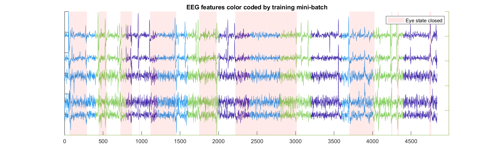
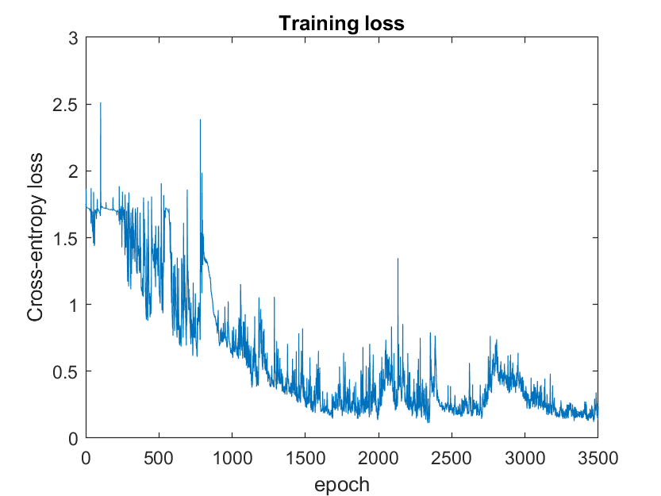
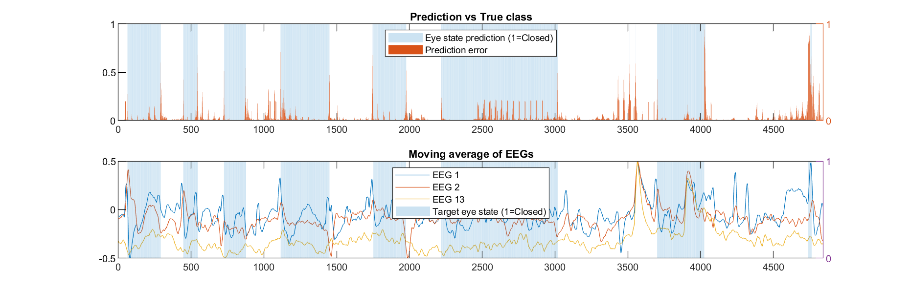
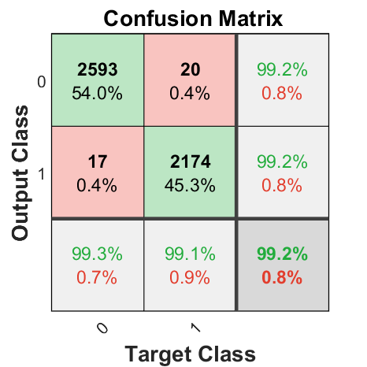
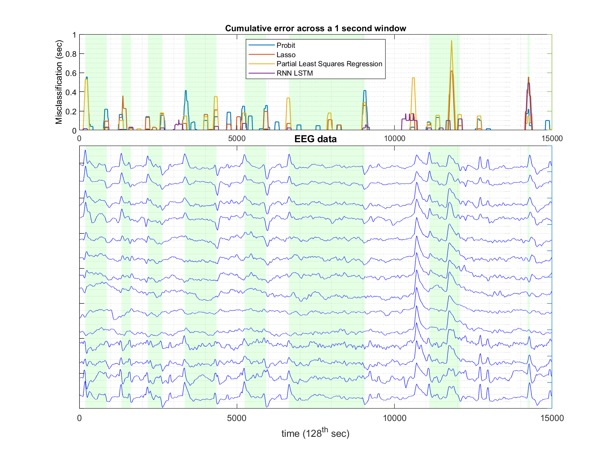

Autonomous vechicle microsleep detector Vol2: Modelling
Binary classification using EEG readings (part 2 of 3)
Autonomous vehichles are no longer reserved for the realm of science fiction, but some AI experts say the complexities of AI-driven cars in public make the possibility never eeding to drive a far off future. Perhaps to bridge the gap are technologies that greatly reduce the labour involved in driving, while still reducing the risk.
Table of Contents
- Summary of Exploratory Data Analysis
- Feature Engineering: Windowed Variable Correlations
- Probit Regression
- Lasso Probit Regression
- Partial Least Squares Regression
- Recurrent Neural Network - Long Short Term Memory (LSTM)
- LSTM: Shaping training samples
- LSTM Model Training & Prediction
- LSTM: Model Selection
- Summary
Summary of Exploratory Data Analysis
Insights found in the dataset;
- EEG values' extremes are asymmetric around their medians.
- Mean EEG value doesn’t change much globally with eye state.
- Lead signals exist for eyes opening & eyes 4. closing. Strongest in variables 1-2 & 11-14.
- ‘Shape’ of Lead signal is independent of starting magnitude.
- False transition signals are indicated by anomalies in EEGs 5 & 8.
- Some EEG correlations shift significatnly depending on eye state.
Assumptions on the modelling process
- No test datasets. With only EEG sensor data from one patient across one continuous period, inferring auto-pilots performance in a real life situation is too much of a leap from the limited dataset. Knowing generalisation performance is impossible, instead we will speculate, and prescribe robust modelling techniques when they should be.
- Applying the machine learning solution in a real world context, data will be fed to the system continuously, although a total allowable lag of 0.2 seconds will be assumed. This will cover car dynamics & machine computation time while still preventing long sequences of an uncontrolled car!
Constraints to design for
- 3x more ‘Open eye’ misclassifications than ‘Closed eye’ misclassifications.
- Delay in detecting eye state change must be <1 second.
- Short interval eye closed (<0.3 seconds), to be disregarded (blinking not the same as closing)
The variable correlation insight may allow models not traditionally used for times series prediction to be used. The window selected must be short enough so that a few consecutive miscalssifications isn’t catastrphoic in the business application, but long enough that it captures the predictive power of EEG correlations, instead of noise.
A custom built Long Short Term Memory (LSTM) recurrent neural network will be used to take advantage of the EEG patterns that mark transition points, and maintain the eye state until a new pattern signals a transition back to the original open/closed state.
MATLAB functions exist for many traditional time series modelling techniques, but using models that require independently drawn data (not time series) will be more interesting.
To approach the cost asymmetry probelm of avoiding False Negatives more than False Positives, some convex optimisation techniques will be explored where MATALAB native functions may not be satisfactory.
Feature Engineering: Windowed Variable Correlations
The Exploratory Data Analysis (EDA) showed that EEG correlations had some predictive power in eye state. The creation process was;
1. Randomly sample a very small number of EEG observations, in any temporal order, stratifying the draws into open & closed observations.
2. Calculate the correlations between EEGs in that sample.
3. Compare those correlations which were calculated with random observations of Open compared to Closed eye-state.
Selecting correlation windows
The business application is an autonomous driving system for a passenger who’s shut their eyes. So the model will make predictions ‘on-line’, and a lag in making that prediction greater than 0.2 seconds is too slow. A lot can happen when travelling at 100km/h.
Creating new features out of the raw EEG values will be through a process of shifting a ‘window’ forward through time over the data. Each 0.2 seconds, correlations between EEGs are calculated over a window spanning the latest 2 seconds.
This will create 567 samples out of the original 14980 samples of raw data, where the first observation in the new feature set is EEG correlations during the first 256 timesteps.
% Load Data from E.D.A.
load('EEGloseEyes_EDA.mat','windowlength','TimeSeries_cln','TimeSeries_clnnorm','idx_openclose','N','Nvars','N_seconds','win_trainN');
% Correlations between EEGs for use in a binary classifier
% To capture correlations between EEGs, move a
% window across the dataset. step length of 0.5 sec, and width of 3 sec
windowlength_seconds = 2;
steplength_seconds = 0.2;
windowlength = round((N/N_seconds)*windowlength_seconds);
steplength = round((N/N_seconds)*steplength_seconds);
windowstartId = (1:steplength:N-windowlength);
% vectorised EEG correlation data for model training
x = NaN( numel(windowstartId) , ((Nvars^2)-Nvars)/2 );
% target variable is avg. # of "open eye" observations in each window
y = NaN( numel(windowstartId) , 1 );
% store # of timesteps in each window, for observation importance weighting
winlen = NaN( numel(windowstartId) , 1 );
for si=windowstartId
obsind = find(windowstartId==si);
% correlation between EEGs in the window leading up to the prediction period
EEGcor = corr( TimeSeries_clnnorm(si: si+windowlength,:));
x(obsind,:) = EEGcor(tril(ones(14),-1)==1);
response_t = si+windowlength+[1:steplength];
y(obsind,1) = sum(idx_openclose(response_t(response_t<=N)) == 1 ); % total timesteps with Open eyes
winlen(obsind,1) = sum((response_t<=N)); % number of timesteps in the window.
end
% average eye-state for each windowed sample
y_weighted = y(:,1)./winlen;
% if dataset contained EEG timeseries from multiple patients, those would be split into train, validate & test sets.
% split data into train-test with a ratio.
trainsplit_ratio = 1.0;
trainidx = 1:floor(N*trainsplit_ratio);
% train-test will not be used in this project. test = train = all data
testidx = floor(N*trainsplit_ratio)+1:N;
% Indicies of the windowed variable correlation data.
win_trainidx = 1:floor( numel(windowstartId)*trainsplit_ratio);
x_train = x(win_trainidx,:);
y_train = y_weighted(win_trainidx,1);
% convert an average number of eye-states, into either one or the other.
yBinom_train = (y_train)>=0.5;
% lets take a look at the histogram of this new feature
figure('Position',[612 358 945 568]);
histogram(x_train,linspace(-3,3,60),'Normalization','probability'); title('EEG correlations histogram'); xlabel('x','Interpreter','latex','FontSize',16); ylabel('$P( x )$','Interpreter','latex','FontSize',16)
Normalising & Transforming
This feature is heavily skewed to the right, so a transform will be needed to normalise it. Normalised features will mean that marginal changes in them (X), will equate to the same percentage change in the predicted Y variable once multiplied by a coefficient, no matter the value of X.
An exponential transform would work, as we want to spread out the upper values which currently are clumped together a little. Centering the data and then using its Z-scores should spread values evenly further.
hold on;
xLog_train = exp(x_train);
% z-score of data its exponent
xNorm_train = normalize(x_train,1);
xLogNorm_train = normalize( exp(x_train) ,1);
histogram( xLog_train ,linspace(-3,3,60) ,'Normalization','probability');
histogram( xNorm_train ,linspace(-3,3,60) ,'Normalization','probability');
histogram( xLogNorm_train ,linspace(-3,3,60) ,'Normalization','probability','FaceColor','none','LineWidth',1);
legend({'EEG Correlations','exp( EEG corr )','Std Norm EEG corr','Std Norm EEG exp( corr )'},'Location','northwest')
The z-score of the exponent of the EEG correlations (white bars) are now much closer to normally distributed. Since the task is binary classification, A probit model comes to mind.
Probit Regression
Since a probit model does an exponential transform on independent variables already, the raw correlation metrics will be used (blue bars).
There are a large number of variables compared to observations (91 to 576), and no validation data exists as measurements are taken from one subjects EEG. So, even though the transformed data looks normally distributed, a pvalue of 0.01 will be used instead of 0.05 to be cautious of overfitting.
% Fit the correlation data to eye state with a binomial probability model
mdl_probit = fitglm( x_train ,y_train,'Distribution','binomial','link','probit');
% remove variables sequentially starting with largest pvalue, untill all are under tolerance.
mdl_probit = remlargePv3(mdl_probit,'',0.01);
yfit_Probit = predict(mdl_probit , x_train );
yfit_ProbitBinom = yfit_Probit>=0.5;
[~ ,~] = plotPrediction( yfit_ProbitBinom , yBinom_train , yfit_Probit , y_train , steplength_seconds );
Model Evaluation
At 97.7% accuracy, the performance looks really great - although this is a measure of in-sample performance. Because the dataset only contained one subjects' EEG readings, any generalisation performance metric reated using the original dataset would not at all reflect performance in the real-world business application.
Inpsecting the time series, errors are not bunched in particular timesteps, which is good for an autopilot system. Prediction probability scores are exactly 1 or zero, which hints at overfitting. The coefficient estimates statistics could reveal why;
% view the top 10 model parameters
disp(mdl_probit.Coefficients(1:10,:))
Estimate SE tStat pValue
___________ __________ ___________ ______
(Intercept) -1.6499e+15 6.366e+06 -2.5917e+08 0
x1 -6.289e+14 3.9605e+06 -1.5879e+08 0
x6 -1.1462e+15 5.4313e+06 -2.1104e+08 0
x7 1.1225e+15 6.8308e+06 1.6432e+08 0
x8 7.0188e+14 4.8371e+06 1.451e+08 0
x11 -9.9372e+14 9.6381e+06 -1.031e+08 0
x12 -1.3728e+15 5.1963e+06 -2.6418e+08 0
x15 -4.8003e+14 3.0494e+06 -1.5742e+08 0
x17 4.6081e+14 2.8604e+06 1.611e+08 0
x18 -5.7308e+14 3.3939e+06 -1.6885e+08 0
These parameters are huge relative to the range of the predictor and response variables (-1 to 1), so this model is likely overfit and wouldn’t perform well given new data. Very large coefficients make the model sensitive to variable changes, so could give a wildly different prediction if noise were in new data. For example, if some of the outliers removed at the start of the EDA were due to measurement device error, they could have dramatic effects in a real world application that used this model.
If large coefficients were a cause of poor generalisation performance, a Lasso regression could be used to incentivise smaller parameter magnitudes.
Lasso Probit Regression
Regression where the parameter search is incetivised for not only maximum likelihood but also small magnitude of parameters, is exactly a Lasso regression. Choosing how much importance to place on having small model parameters is done by creating a model for a range of importance factors - “Lambda"(λ), and inspecting performance of each model.
%% Try a lasso binomial regresion to fit a "probability of class"
kfolds=7;
[B,fitinfo]= lassoglm(x_train, y_train ,'binomial','CV',kfolds,'link','probit','NumLambda',20);
% plot cross validated performance scores for each lambda
lassoPlot(B,fitinfo,'plottype','CV');
set(gca,'Yscale','log'); ylabel(['Log of ',get(get(gca,'ylabel'),'String')]); grid on
legend('show')
Selecting the best
The cross validation process is in place to help select the right lambda (small parameter factor). Although just picking the best model of all lambda values' cross validated performance scores would be a biased process.
The reasoning is as follows. Varying lambda allows many models to be generated through shifting importance away from the sum of residuals, and to smaller parameters though lambda, which is not related to the dataset. If there are infinitely many lambda values, there would be infintely many objective functions for the parameters to be found. Statistically, a better model will be found than the regular least squares model just through this process of varying lambda. Just like a models parameters can be overfit to a dataset, here lambda allows overfitting of the modelling process.
To counter this selection bias, adhering to “Occams Razor” by favouring a smaller set of parameters - a model with stronger lambda value is selected, within 1 standard deviation of the ‘best’ models performance;
Cross validation of each lambda-model gives performance scores as a random variable (for the randomly k-folded data). The variance of these scores on the best model gives an upper bound on how far to move away from the optimal model, in terms of its lambda value. 1 standard deviation of best-lambda performance scores gives the lambda shown in the plot circled in blue. The green circle is the model with best cross validated performance on this dataset.
% Use the model with performance 1 SD below the best CV performance.
idxLambdaMinDeviance = fitinfo.IndexMinDeviance;
B0 = fitinfo.Intercept(idxLambdaMinDeviance);
coefLASSO = [B0; B(:,idxLambdaMinDeviance)];
yfit_Lasso = glmval(coefLASSO, x_train ,'probit');
yfit_LassoBinom = (yfit_Lasso>=0.5);
% Plot prediction as time-series, and Confusion Matrix
[~] = plotPrediction( yfit_LassoBinom , yBinom_train, yfit_Lasso , y_train , steplength_seconds ,'confusion' );
Another great model by using the correlations between EEG values, and an optimised lambda value.
Because model selection is done through evaluating many models fit using a range of regulariser parameter weightings (λ), we are essentially “seeing the output” before selecting a model. This makes p-values of coefficients a compromised metric. In place of that, cross validation tests allowed selecting 1 standard deviation away from the best fit model, in favour of a simpler model.
Again, we will look at the coefficients to speculate on generalisation performance, in the absence of validation data adequate for the business application.
% view magnitude of coefficients
figure; bar( sort(abs(coefLASSO),'descend') )
title('Magnitude of coefficients for best Lasso probit model')
Like the boxplot of correlation differences in the EDA showed, under half of the correlations have significant predictive power. Their is a lot of noise in most of the EEG correlation features. The model coefficients are now in the same order of magnitude as the model features themselves. This would likely have much better generalisation performance than the probit regression, which had extrememly large values in its parameters.
Partial Least Squares Regression
Instead of assuming gaussian distribution of error terms like the probit model, the PLS algorithm minimises squared residuals after ‘de-noising’ the input features to a lower dimensional & orthogonal set. This is pertinent because a majority of the original EEG variables are correlated.
Now the normalised exponent of the correlation variables calculated earlier is used, as PLS only uses a squaring function to penalise residuals, which will be best utilised if the input variables are evenly & symmetrically spread.
Considering there is such a large number of features for the number of samples, a modelling technique that utilises dimensionality reduction might lead in the right direction.
[~,~,~,~,PctVar] = pca(xLogNorm_train);
% first 95% of variance explained by k components
ncomp = find( cumsum(100*PctVar./(sum(PctVar))) >=95 , 1);
figure;
plot(1:size(xLogNorm_train,2),cumsum(100*PctVar./(sum(PctVar))),'-b.');
xlabel('Number of PCA components');
ylabel('Percent Variance Explained in Data');
hold on; plot([1:100], ones(100,1).*95,'r-.');
legend('cumulative variance in data explained by components', ['95% variance explained by ',num2str(ncomp),' components'],'location','best')
This chart shows just how many of the EEG correlations were nearly meaningless in their predictive power.
Reducing dimensionality of the feature set.
In the EDA when taking the perspective data was time-invariant, It wasn’t obvious whether EEG values' were predictive of overall eye-state. (the transition ‘spikes’ were time varying in their predictive power). Using correlations between EEGs showed predictive power, but meant making abstractions with the dataset, giving a larger number of new features (91 EEG correlations).
If the PLS algorithm projects the 91 correlations onto a new vector space of just 24 dimensions, its variation is explained 95% as well as using all 91 of the EEG correlations. By choosing a number of components from the Principal Component Analysis which doesn’t include the output variable, the outcome variables are hidden from the parameter selection process - a hedge against overfitting.
% train a Partial least squares model using number of components that gives 95% variation in the PCA
[xloads,yloads,xscores,yscores,betaPLS,~] = plsregress( xLogNorm_train , y_train ,ncomp);
yfitPLS = [ones(numel(windowstartId),1)*betaPLS(1) + xLogNorm_train*betaPLS(2:end)];
% Plot prediction as time-series, and Confusion Matrix
[ ~ ] = plotPrediction( yfitPLS>=0.5 , yBinom_train, yfitPLS , y_train , steplength_seconds );
This model is good, doesn’t require the assumption of normally distributed errors, and reduces the problems high dimensionality artificially created through the windowing method on EEG correlations. It’s interesting to note the predictions are no longer considered probabilities in the range of 0 - 1, they are estimations of eye-state as decimals, and do not have the same meaning as predictions by the lasso or probit models.
False positives vs. False Negatives (residual skew)
The 1’s are classified wrong more than the 0’s are. In the EDA, a boxplot of the EEGs showed longer tails on the right, meaning more weight in the lower values. If the Input variables to PLS model also has a skew, and it is heavier in observations of one eye-state vs another, it could cause the model to be asymmetric in the prediction of extreme errors, like those more wrong than the 0.5 probability cutoff for classification;
fprintf('Median predictor skewness of all observations %.3g \nMedian predictor skewness in "Open" classes %.3g \nMedian predictor skewness in "Closed" classes %.3g' ,...
median( moment( xLogNorm_train(:,:) , 3 ) ),...
median( moment( xLogNorm_train(y_train==0,:) , 3 ) ),...
median( moment( xLogNorm_train(y_train==1,:) , 3 ) ) )
Median predictor skewness of all observations 0.494
Median predictor skewness in "Open" classes 0.515
Median predictor skewness in "Closed" classes 0.377
The parameter search process in PLS is via minimising a sum of squares (X^2), which does not consider the skewness (sum of X^3). The “Closed” class (0.36) has skewness with less extreme values than the “Open” class (0.54), so Closed classes may have a squared sum of residuals equal to that of Open classes, but in the Open class, there are more extreme outliers that contribute to the sum of squares, which results in more residuals crossing over the 0.5 probability threshold for classification betweeen 1 and 0.
The difference in skewness is not huge, but significant enough to imbalnce the confusion matrix: 15 false neegatives, vs 7 false positives.
Recurrent Neural Network - Long Short Term Memory (LSTM)
A recurrent neural network (RNN) was selected for its ability to store memory of a particular pattern over many sequences. The ‘transition spikes’ could be a good candidate for this, as they occur only a handful of times, and preceed long continuous sequences of one state or another.
An LSTM may be able to deal with the long input sequences required to detect these ‘transition shapes’ which are 100-150 timesteps - about a second.
The EEG variables with pronounced transition spikes might be easier for the LSTM network to detect and remember. However, recalling from the EDA;
Insight #5 “Similar patterns to transition-spikes occur at some non-transition timesteps in EEGs 1-4, 11-14, but EEGs 5 & 8 have a uniquely pronounced signal at this time also”
This requires adding variables which do not have signals ahead of eye-state transitions. A ‘false’ transition signal could be flagged with those EEGs which do not give transition signals normally, but still have the false transition pattern. EEGs 5 & 8 flag the false pattern, EEGs 1, 2, 11 & 13 consistently show transition signals ahead of state changes.
% downsample observations to the average of a 3 step window
vars=[ [5 , 8] , [1 2 11 13] ]; % interesting Variables % [1 2 13 14];
dsr = 3; % downsampling ratio
dwn_TS = zeros( floor(N/3)-1 , numel(vars)+1 );
for sbp=vars
dwn_TS(:,sbp) = arrayfun(@(ii) mean([TimeSeries_cln(ii-(dsr-1):ii+(dsr-1),sbp)]) , [dsr:dsr:numel(TimeSeries_cln(:,1))-(dsr-1)]' );
end
dwn_TS(:,15) = arrayfun(@(ii) mean([idx_openclose(ii-(dsr-1):ii+(dsr-1), 1 )]) , [dsr:dsr:numel(TimeSeries_cln(:,1))-(dsr-1)]' );
dwn_TS(:,15) = round(dwn_TS(:,15));
figure;
downsampleIndices = (dsr:dsr:numel(TimeSeries_cln(:,1))-(dsr-1))';
plot( TimeSeries_cln(:,1) ); hold on; plot(downsampleIndices,dwn_TS(:,1),'r*-'); grid minor;
xlim([6570 6620]); legend('Raw EEG#1','Downsampled EEG#1');
ylabel('EEG value'); xlabel('timestep');
title('Original EEG signal with it''s downsampled approximation')
The red line is the average of original sequence across a 5-step window, which shifts forward by 3 steps each time. New downsampled data becomes 1/3 the length allowing for faster training, and a less noisy input signal.
From the EDA;
Insight #4: “Shape' of Lead signal is independent of starting magnitude."
This means the network will have more meaningful variation in the input data if we remove trend from the EEGs, and use the difference between points.
% reshape the downsampled EEGs: [timesteps, (none) , variable]
Ts_X = permute( dwn_TS( : , vars) , [1 3 2] );
% for each variable, calculate the moving sum of differences, then normalize into the range [-1 , 1]
for ii=1:size(Ts_X,3)
Xdiff = [0; diff(Ts_X(:,:,ii)) ];
Ts_X(:,:,ii) = movsum( [ Xdiff ],[3 0]);
Ts_X(:,:,ii) = normalize( Ts_X(:,:,ii), 'range',[-1 1]);
end
Ts_Y = permute( dwn_TS( : , end ) , [1 3 2]);
Ts_Y = permute(dummyvar(categorical(Ts_Y)) , [1 3 2]);
% plot differneced normalised variable with/without moving sum applied.
figure;
plot([Ts_X(:,1,ii), normalize(Xdiff,1,'range',[-1 1]) ])
xlim([420 500])
legend('Normalised moving sum of differenced #EEG 2','Normalised differenced #EEG 2'); xlabel('timestep');
title('3-step Moving sums effect on EEG'); ylabel('EEG feature value'); grid minor
Now the transition lead signals values are beggining from the same base. These ‘transition spikes’ happen over 100-150 timesteps, so a moving sum of the differenced EEG will help remove some noise from the signal.
LSTM: Shaping training samples
Each input-output pair of a sample learnt by the RNN is a sequence of feature vectors, predicting another sequence of eye-states (2-classes). The downsampled EEG features are reshaped, and grouped into batches for mini-batch training.
% create minibatches of the sequences of variables.
seqlen_in = 40; % input sequence length
seqlen_out=5; % target sequence length
Nbatches = 12; % number of batches in each training epoch
[DataX_batched, DataY_batched, Xind_c, Yind_c, singleseqlen] = batchdatasets( Nbatches, Ts_X , Ts_Y , 'seq2batch' ,seqlen_in, seqlen_out);
% size of each minibatch input and output
InputDataSize = size(DataX_batched{1});
OutputDataSize = size(DataY_batched{1});
batchsize = size(DataX_batched{1},1);
disp(['Input sequences'; DataX_batched ])
'Input sequences'
[400×40×6 double]
[400×40×6 double]
[400×40×6 double]
[400×40×6 double]
[400×40×6 double]
[400×40×6 double]
[400×40×6 double]
[400×40×6 double]
[400×40×6 double]
[400×40×6 double]
[400×40×6 double]
[400×40×6 double]
disp(['1st batch of Target sequences'; DataY_batched(1) ])
'1st batch of Target sequences'
[400×5×2 double ]
Each input sample the network ingests is a 40-step sequence of 6 features which begins after the last step of the prior batch. The output sample is a 5-step sequence of 2 dimesnsions, one for each possible class the eye-state can take.
The entire 117 seconds sequence is now in 4992 steps, so dividing it into 12 batches of 400 input-output pairs. The remaining 192 samples will be omitted so the the network training algorithm can use even batch sizes, and train faster.
The indices of each sample help to show how input’s are presented to the network;
disp('First 10 steps of input sequence for samples 1-3 in mini-batch #1'), disp( Xind_c(1:3,1:10) )
First 10 steps of input sequence for samples 1-3 in mini-batch #1
1 2 3 4 5 6 7 8 9 10
2 3 4 5 6 7 8 9 10 11
3 4 5 6 7 8 9 10 11 12
disp('Last 10 steps of samples 1-3'), disp( Xind_c(1:3,end-9:end) )
Last 10 steps of samples 1-3
31 32 33 34 35 36 37 38 39 40
32 33 34 35 36 37 38 39 40 41
33 34 35 36 37 38 39 40 41 42
disp('Samples 1-3 are timesteps continuing from input sequence') , disp( Yind_c(1:3, : ) )
Samples 1-3 are timesteps continuing from input sequence
41 42 43 44 45
42 43 44 45 46
43 44 45 46 47
The first sample in mini-batch #1 ends at t=40, and this cell state is passed to the first sample in mini-batch #2 whose values are from t=41 to t=80. This way, the LSTM can retain ‘context information for much longer than 40 timesteps. Only mini-batch #1 will have no cell state passed to it, so relies on only the first 40 input steps to make it’s predictions.
disp('Input sequences are continued in the following minibatch'), disp( Xind_c(400 + (1:3),1:10) )
Input sequences are continued in the following minibatch
41 42 43 44 45 46 47 48 49 50
42 43 44 45 46 47 48 49 50 51
43 44 45 46 47 48 49 50 51 52
Visualising the sequences for all 6 selected EEG variables, at sample numbers 1 & 21 shows how within a batch, network is exposed to overlapping sequences;
% Plot input-output pairs from the batched data
% Find eye-state transition timesteps
eyeOid = find([ 0 ;diff( Ts_Y(:,1,2),1,1)]==1);
eyeCid = find([ 0 ;diff( Ts_Y(:,1,2),1,1)]==-1);
% timestep of first Closed to Open transition
smplB = find(Yind_c(:,1)==eyeOid(1),1) - 2;
% sample 20 steps prior
smplA = smplB-20;
% plot EEGs at sample A & B
figure;
pEA = plot( Xind_c( smplA ,: ) , squeeze(DataX_batched{1}( smplA ,:,:)),'b','LineWidth',1.5); hold on;
pEB = plot( Xind_c( smplB ,: ) , squeeze(DataX_batched{1}(smplB,:,:)),'r.-');
ylabel('Input feature value');
% Plot target sequence following input samples.
yyaxis right; yticks([0 1]); yticklabels(gca,{'Open','Closed'})
pSA = plot(Yind_c( smplA ,:), squeeze(DataY_batched{1}(smplA,:,2)),'b-d','MarkerFaceColor','b');
title('Input-Output pairs from training minibatch #1')
pSB = plot(Yind_c( smplB ,:), squeeze(DataY_batched{1}(smplB,:,2)),'r-d','MarkerFaceColor','r');
xlabel('timestep'); ylabel('Eye-state')
legend([pEA(1),pEB(1),pSA(1),pSB(1)],'EEGs @ sample sequence A','EEGs @ sample sequence B','Eye state @ end of seq A','Eye state @ end of seq B','location','north')
Here the network will have to learn that the ‘red’ sequences indicate a transition from open to close, using only the 40-step sequence as context. The samples that follow in mini-batch #2 will have this context passed to them (they will start at t=61).
Maintaining cell-memory across mini-batches
Each mini-batch contains 400 samples of sequences 40 timesteps long. Visualising the mini-batches shows that each is exposed to a maximum of 2 trainsition spikes. This could be a problem for training, and put limitations on how the model is used for prediction.
figure('Position',[147 549 1182 363]);
Cmap = colormap; hold on;
for bi = 1:Nbatches
bInd = (1:440)+ 400*(bi-1);
plot(bInd, squeeze(Ts_X(bInd,1,:))'+[1:size(Ts_X,3)]' ,'Color',Cmap( floor(1+rem(bi,3)*(64/3)) ,:) ,'HandleVisibility','off');
end
yticklabels '';
yyaxis right; bar( dwn_TS( : , end ) ,'LineStyle','none','FaceAlpha',0.1 ,'FaceColor','r'); yticklabels '';
title('EEG features color coded by training mini-batch'); legend('Eye state closed')
 The first mini-batch propogated through time by the network (blue) passes it’s memory state/context to the next batch of 440 steps (green), which then passes to the next 440 steps (purple), and so on.
Convergence of LSTM with memory passed through mini-batches;
Parameters determine cell state, used to predict and update parameters based on that error: $$ \theta_b^i =g\left(C_{\mathit{\mathbf{b}}}^{\mathit{\mathbf{i}}} ;,X_b ;,Y_{b;} \right)+\theta_{b-1}^i $$
The cell state prior to a parameter update is used to calculate cell in the next batch: $$ C_b =\mathit{\mathbf{F}}\left(C_{\mathit{\mathbf{b}}-1}^{\mathit{\mathbf{i}}-1} ;,\theta_{\mathit{\mathbf{b}}-1}^{\mathit{\mathbf{i}}} ;,{\mathit{\mathbf{X}}}_{\mathit{\mathbf{b}}} \right) $$ So, the cell state passed forward as ‘context’ now takes on a different meaning because the parameters aren’t the same as the ones that created the ‘context’ / cell state. This implies a leak in information through training epochs. i.e. $$C_{\mathit{\mathbf{b}}}^{\mathit{\mathbf{i}}} \not= C_{\mathit{\mathbf{b}}}^{\mathit{\mathbf{i}}-1}$$
$$\theta: network\ parameter\ setting,\ C: memory\ cell\ state,\ g\left(·\right): parameter\ update\ rule,\ \mathit{\mathbf{F}}\left(·\right): memory\ calculation\ b,i:\ batch\ and\ epoch.$$
Without passing memory through mini-batches, the parameter update will optimise the network for only the inputs of that one mini-batch, which isn’t a problem, because over 100’s of epochs all batches are seen, and they remain the same through the epochs. But a memory cell is putting a different ‘lens’ on those same inputs that are repeated over 100s of epochs, therefore all parameter updates are based off different inputs. There is less consistency for the network to learn.
Because only 1-2 of the transition-patterns the network is trying to learn occur per batch, if two adjacent patterns are very different, the leak in memory ‘meaning’ could be exacerbated by the time training of that same batch happens again. Careful selection of training hyperparmeters is needed to optimise convergence.
Cell state is a function of a lagged parameter setting and lagged cell state, across all batches and iterations;
$$ \begin{array}{l}C_b =\mathit{\mathbf{F}}\left({\mathit{\mathbf{C}}} {\mathit{\mathbf{b}}-1} ;,\theta_{\mathit{\mathbf{b}}-1}^{\mathit{\mathbf{i}}} ;,{\mathit{\mathbf{X}}} {\mathit{\mathbf{b}}} \right) \\ C_0 =\mathit{\mathbf{F}}\left(\left\lbrack 0\right\rbrack ;,\theta_{\mathit{\mathbf{b}}}^{\mathit{\mathbf{i}}-1} ;,{\mathit{\mathbf{X}}}_{\mathit{\mathbf{b}}} \right)\end{array} $$
Real-world implementation of a memory preserving LSTM
Passing cell state through sequences has an impact on the real-world application of this model once trained. Each sample’s prediction in the sequence is dependent on all the samples leading up to it. So, without pre-computing all those prior samples the device using this model would be completely useless. The user would have to replicate the first 440 samples the LSTM was fed by opening then shutting eyes for about 1.5 seconds, just like in the dataset. Then, the network would create the cell state in the same way it does during training.
Defining the network topology
The output sequence length requires a 5-timestep length, but the transition patterns in the EEGs occur over a much longer period. An encoder-decoder model permits different length sequences of input & output, so that will be used with a regular feed forward layer at the end of each decoder step to convert the values into the range 0 - 1, and do the classification using softmax activation.
Probit, Lasso & PLS models used 91 correlation features, though only 20 or so contained the large majority of the explanatory power. RNN training takes a long time because each step needs to be calculated in series, not paralellel - so the network will be created with 45 hidden units in both the encoder and decoder.
The function GenerateNNetLayer.m takes batch size, number of units & other parameters to define a layer in the network, with weights pre-initialised.
%% Topology
epochs = 800;
trainingSettings.GDOptimizer = 'Adam';
trainingSettings.learnrate = 0.001;
trainingSettings.LossType = "MultiClassCrossEntropy";
% input embedding
encoderHUs = 45;
decoderHUs = 45;
classifierHUs = OutputDataSize(3);
% create Encoder
[NNLayerEnc] = GenerateNNetLayer( encoderHUs , InputDataSize(1) , InputDataSize(3) , "LSTM" , "tanh" ...
, InputDataSize(2) , struct('resetstate',false,'predictsequence',false ) );
% create Decoder
[NNLayerDec] = GenerateNNetLayer( decoderHUs , InputDataSize(1) , NNLayerEnc.Nunits , "LSTM" , "tanh" ...
, OutputDataSize(2) , struct('resetstate',false,'predictsequence',true ) );
% Projection Layer to Output tokens
[NNLayerFinal] = GenerateNNetLayer( classifierHUs , OutputDataSize(1) , NNLayerDec.Nunits , "dense" , "softmax" );
NNModels = [{NNLayerEnc},{NNLayerDec},{NNLayerFinal}];
disp([newline ,'Input Layer (Encoder); ']) , disp( NNModels{1} )
Input Layer (Encoder);
Type: "LSTM"
ActFcn: "tanh"
Nunits: 45
XInput: [400×40×6 double]
Activations: [1×1 struct]
Weights: [1×1 struct]
BP_pOut: [1×1 struct]
dEdW: [1×1 struct]
Connectivity: [6×45 double]
predictsequence: 0
PropBatchinSequence: 0
resetstate: 0
SelfReferencing: 0
TeacherForcing: 0
Peephole: 0
Attention: 0
BiLSTM: 0
InputMask: [1×1 struct]
curStep: 1
Nstates: 40
Inistates: [1×1 struct]
disp([newline ,'Prediction Layer (Decoder); ']) , disp( NNModels{2} )
Prediction Layer (Decoder);
Type: "LSTM"
ActFcn: "tanh"
Nunits: 45
XInput: [400×5×45 double]
Activations: [1×1 struct]
Weights: [1×1 struct]
BP_pOut: [1×1 struct]
dEdW: [1×1 struct]
Connectivity: [45×45 double]
predictsequence: 1
PropBatchinSequence: 0
resetstate: 0
SelfReferencing: 0
TeacherForcing: 0
Peephole: 0
Attention: 0
BiLSTM: 0
InputMask: [1×1 struct]
curStep: 1
Nstates: 5
Inistates: [1×1 struct]
disp([newline ,'Final classification Layer; ']) , disp( NNModels{3} )
Final classification Layer;
Type: "dense"
ActFcn: "softmax"
Nunits: 2
XInput: [400×45 double]
Activations: [1×1 struct]
Weights: [1×1 struct]
BP_pOut: [1×1 struct]
dEdW: [1×1 struct]
Connectivity: [45×2 double]
The encoder & decoder are single direction LSTMs. The decoder doesn’t take the output of it’s recurrent activations as input to the next step, only the encoders last activation and cell state is used as context. The internal memory cell state, once initialised with the encoder output, holds all information needed to correctly predict 5 sequential classes.
LSTM Model Training & Prediction
Now the network hyperparameters & topology have been set, the training algorithm can search for the best parameter settings for the objective
%% call training algorithm to learn the EEG dependencies
try
load('EEGworkspace_45Hus3downsampleV_13_8_11_1_2_seqIn40seqOut5_gradclip_minus1to1_B.mat')
catch ME
[NNModels, ~, ~ , ~ ] = ...
TrainSequnceNNetV3(NNModels, epochs, trainingSettings , DataX_batched, DataY_batched, [], []);
end
printNNetsettings(NNModels{end}.trainingInformation)
Network Settings:
gradclip : : True
LossFcn : : @(Pred,Real)-sum(Real.*log(Pred),3)
Loss_delta : : @(Pred,Real)CrossEntropyDeriv_ifisnan(Real,Pred)
seedStateFromPriorLayer : : False
LayerOperation :
"regular" "RepeatVector" "TimeDistributed"
"LSTM" "LSTM" "dense"
NewDataperEpoch : : False
First layer, the encoder, is a 40-step LSTM ingesting the EEG sequences. 2nd Layer is a 5-step LSTM which takes last output of encoder, uses it as input for all 5 of the decoders’ timesteps. Memory state in the 2nd layer (decoder) is initialised with the last memory state of the 1st layer (encoder). Final 3rd layer is a regular fully connected softmax layer which makes 5 classifications of open or cloed eyes, with each of the 5 recurrent outputs from the 2nd layer (decoder).
figure;
plot(NNModels{end}.LossHistory); xlabel('epoch'); ylabel('Cross-entropy loss'); title('Training loss')

Training loss looks very volatile, proably due to the long sequences it’s learning. Other reasons could be;
- Dataset isn’t varied / large enough. The model has learnt the data (overfit).
- Learning rate - too high. When network approaches a minima in the solution space, it could overshoot as it heads toward an optimal set of parameters.
- Optimiser - Adadelta could work, and would make learning rate selection obsolete.
- Hidden units - too many. 30HUs gives over 10,000 parameters, for just 4000 observations. Lasso model, while not a neural network models had just 20-30 relevant parameters.
- Hidden units - too few for sequence length of 40. Since memory state is passed batch to batch, perhaps sequence length of 40 isn’t necessary to build up a context for the decoder to predict class.
- Initialisation of memory state - passing state from mini-batch to mini-batch meant network learns each batch from a moving foundation. Memory state passed from mini-batch is done before the weight update step, meaning the new batch is learning from a starting state that will not be repeated in the next epoch. A longer input sequence with no memory passing could be an alternative to learning the transition patterns. (A few more hyperparmeters were tested, and shown in the summary.)
Re-running the algorithm in inference mode;
% Run an inference only loop over the dataset with the trained model
[NNModels, Predictions, ErrorMetric1, ErrorMetric2] = ...
TrainSequnceNNetV3(NNModels, epochs, trainingSettings , DataX_batched, DataY_batched, [], [],true,false);
ABSE_seqOut = 1 - mean(round(Predictions(:,:,1))==DataY_unbatched(:,:,1));
disp([['Accuracy across output steps t1 - t5:',], sprintf(' %0.2f%% ', (1-ABSE_seqOut)*100 )])
Accuracy across output steps t1 - t5: 93.85% 95.17% 95.27% 95.38% 95.42%
Model accuracy was competitive with the Lasso, Probit and Partial least squares models.
The neural network used training target sequences of 0.11 seconds, correlation data windows were 0.21 seconds. A like-for-like comparison would need to match the length of prediction windows between the two models.
Unpacking the prediction data and visualising;
% unroll prediction, take the average of each sequence from consecutive
% starting points
[Xunbatch, Yunbatch ] = batchdatasets( [] , DataX_batched, DataY_batched, 'unbatch_seq2batch', Xind_c , Yind_c );
% vector containing average of all 5-step predictions & errors (5 steps * 4800 samples = 24000 predictions)
VectorisedPrediction = reshape(Predictions(:,:,2), [numel(Predictions(:,:,2)) , 1] );
yfitRNNLSTM = accumarray( Yind_c(:) , VectorisedPrediction ,[],@mean , NaN);
% average of all predictions
AbsErr = (abs( yfitRNNLSTM - Yunbatch(:,2) ));
% entire sequence, positive is eyes closed.
TargetSeq = Yunbatch(:,2);%accumarray( Yind_c(:) , TrgVect ,[],@mean , NaN);
% plot prediction error, and key EEG values across the sequnce
figure('Position',[141 471 1471 470]);
subplot(2,1,1); title('Prediction Error')
bh = bar(1:numel(AbsErr),round(yfitRNNLSTM),'LineStyle','none','FaceAlpha',0.2);
xlim([0 max(Yind_c(:))])
yyaxis right;
bar(1:numel(AbsErr), AbsErr );
ylim([0 1]); set(gca,'Ytick',[0 1]);
legend('Eye state prediction (1=Closed)','Prediction error','location','north');
title('Prediction vs True class')
subplot(2,1,2); title('EEGs (normalised, downsampled 3:1)')
plot(1:numel(AbsErr), normalize( movmean( dwn_TS( 1:numel(AbsErr) ,vars([4,5,1]) ),20 , 1), 1 ,'range')-0.5 );
yyaxis right;
bar( 1:numel(AbsErr),TargetSeq ,'LineStyle','none','FaceAlpha',0.2 ,'FaceColor',bh.FaceColor);
set(gca,'Ytick',[0 1])
xlim([0 max(Yind_c(:))])
legend('EEG 1','EEG 2','EEG 13','Target eye state (1=Closed)','location','north')
title('Moving average of EEGs')
 Prediction errors are densest around the transition spikes, and low in between - which validates the hypotheses that they exist, and that a LSTM would remember the most recent transition until another occurs. Between transitions it has no trouble predicting, until a long anomaly occurs after t=4500. The anomaly might be close to a transition spike in the encoded state-space, hence the LSTM is slower to forget it after a transition spike does occur.
% Plot prediction as time-series, and Confusion Matrix
[ fh1 , fh2 ] = plotPrediction( round(yfitRNNLSTM) , TargetSeq, yfitRNNLSTM , TargetSeq , 117/(N) *seqlen_out*dsr ,'confusion' );

Prediction accuracy is quite high, on par with the other models. False negatives greatly outweigh false positives - mostly in the ‘eyes-closed’ state between t=2500 to t=3000. As memory is passed forward through training sequences, it’s more likely that an error will be repeated due to the nature of RNNs, rather than a section of data that was complex to learn.
LSTM: Model Selection
Theoretically a neural network can form any nonlinear function, though practically this is unrealistic. Each dataset has hyperparmeters/ topologies that suit it uniquely. the following were varied in search for a model that would converge & perform well;
- EEG variables entered. 3 sets of varaibles EEGs: (A) 1,2,8,11,13 (B) 1,2,8,11,13 & 5 (C) All 14 EEGs.
- Number of Hidden units in Encoder & Decoder: To test whether the dataset was more or less complex than expected, models with 15, 30, 45 & 60 Hidden units were trained. The training performance and loss history is summarised below.
summariseEEGtraining("compareresults")
EEGs Nunits Accuracy EpochsToConvergence
_______________ ______ ________ ___________________
"1 2 8 11 13" "15" "72.26%" "3000"
"1 2 5 8 11 13" "15" "66.98%" "2200"
"1 2 5 8 11 13" "15" "94.7%" "1350"
"All" "15" "97.63%" "577"
"All" "15" "84.3%" "850"
"1 2 8 11 13" "30" "69.62%" "950"
"1 2 8 11 13" "30" "88.99%" "1300"
"1 2 8 11 13" "45" "84.96%" "1550"
"1 2 8 11 13" "45" "92.79%" "1700"
"All" "45" "90.75%" "1846"
"All" "45" "98.28%" "630"
"1 2 5 8 11 13" "60" "98.06%" "600"
"1 2 5 8 11 13" "60" "95.41%" "960"
"All" "60" "98.67%" "760"
Due to the stochastic nature of Neural network training, there is a lot of variation in performance. Though it seems the models with 60 Hidden units in both encoder and decoder consistently converge to a high performance in the shortest number of training epochs. In theory, more HUs smooth out the probabilistic nature of finding parameters.
save('EEGloseEyes_Modelling.mat')
Summary
The model could be an on-device predictor of eye-state to detect when the driver is having a microsleep, and trigger driverless control of the car. The business problem implied working on-line, using prior timesteps only, and a predict-ahead length of 0.2 seconds. Below in the top plot shows the longest periods each model is wrong for, in a 1-second window.
At worst, the PLS & Lasso model is wrong for a total of 1.008 seconds, around t=12,000. These models fail the objective of the business problem.
EEGCloseEyes_CompreModels("ModelSummaryTable")
Probit LassoProbit PLS RNNLSTM
_______ ___________ _______ _______
Accuracy 0.94059 0.58531 0.94112 0.95234
MaxConsecutiveError 0.60156 1.0078 1.0078 0.8125
EEGCloseEyes_CompreModels("CompareModels")

In-sample performance
All models achieved a 90%+ test-accuracy. The LSTM-RNN achieved highest in-sample accuracy of 95.2%.
Concerning is the LSTMs reccuring errors during the long closed eye period in the middle of the sequence. This is a problem with RNNs that occurs because the memory (of an error) is passed forward though a single sequence input, and moreso when the memory cell is passed between batches.
Generalisation performance
Generalisation performance could have been checked by holding a set of consecutive observations out before training, though the business application would be for use by different users to test data, so evauluating generalisation performance would be both wrong and irresponsible.
When in doubt, the simpler model is preffered. The LSTM used only 6 input variables, where the Lasso, Probit and PLS models were fed 91 correlation variables. 91 is likely too many for the size of the sample to be reliable. Speculating, the LSTM is the superior model.
Real-world application of predictions
Within a 1 second prediction period, Probit model had a maximum of 0.4 seconds of error, PLS & Lasso-probit had 0.6 seconds. The LSTM has a 1 second window with 0.634 seconds of error.
Best model in training was LSTM. Though, for real-world application, more info is needed: on the hardware limitations & the specifics of how user interacts with the product. For example limited computational power / memory might restric use of LSTM neural network. In Probit, Lasso & PLS, Perhaps the correlation data is overfitting to the sample - transition spikes were apparent across all EEGs & time, so might be more genralisable to other EEG capture devices.
Not yet addressed is the disproportionate impact getting a Clsoed eye-state state classified as Open eyes. In the third and final section of this project, different techniques will be used to tune the models to minimise this impact.
In the next volume of this project, the cost imbalance of misclassification is addressed